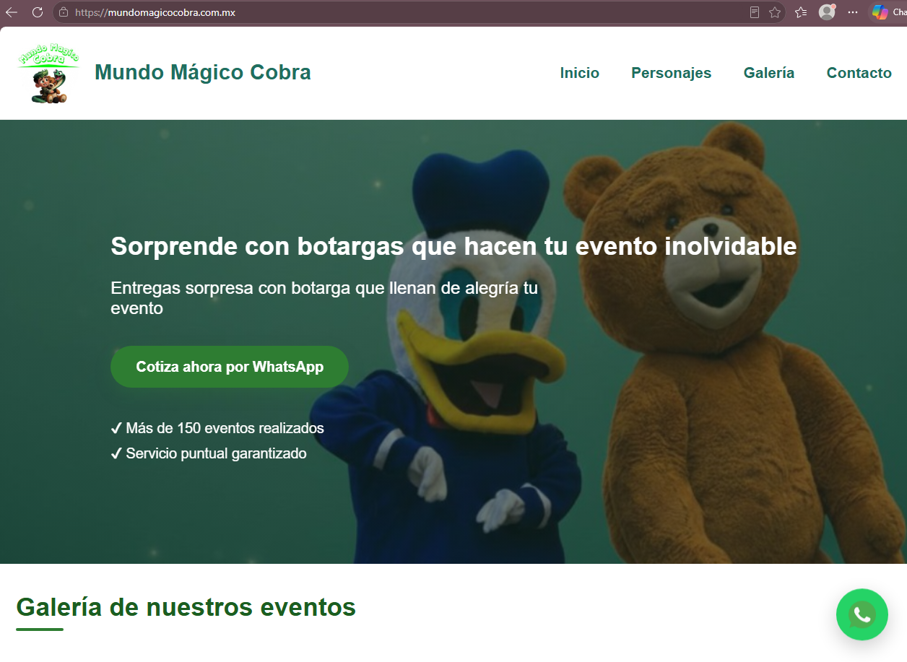
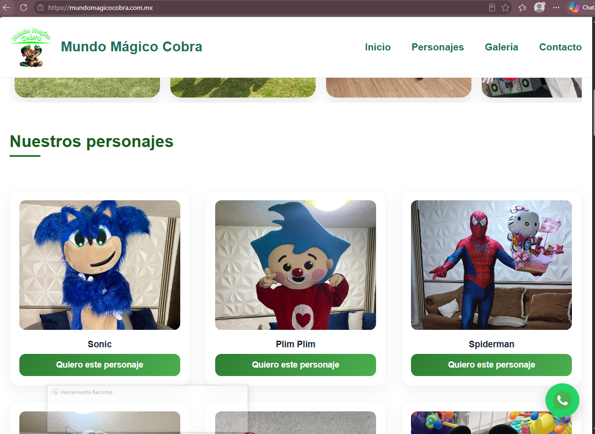
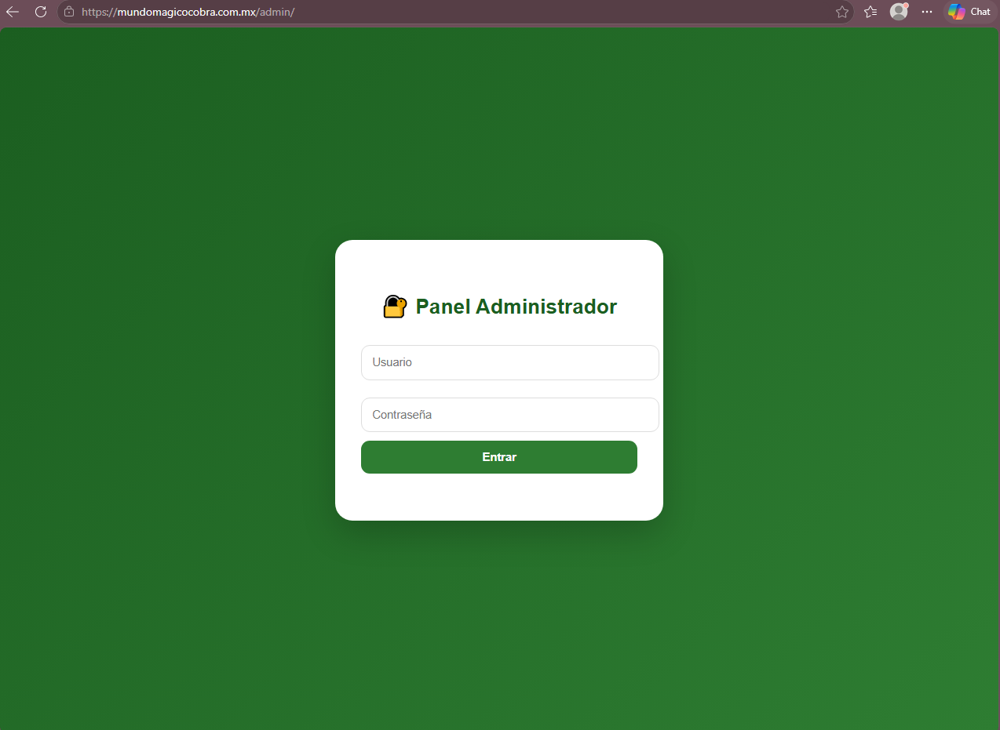
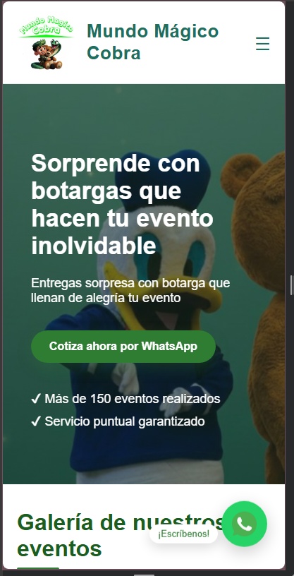

Desarrollo de un sitio web responsivo para un negocio de renta de botargas, permitiendo mostrar personajes disponibles, galería de eventos y contacto directo mediante WhatsApp.

Mundo Mágico Cobra es un negocio dedicado a la renta de botargas para fiestas infantiles, eventos sociales y celebraciones.
El cliente requería una página web profesional que permitiera mostrar sus servicios y facilitar el contacto con los usuarios, ya que anteriormente toda la comunicación se realizaba mediante redes sociales.
Diseñar y desarrollar una plataforma web moderna que permitiera promocionar los servicios del negocio, mostrar personajes disponibles y facilitar el contacto mediante WhatsApp desde cualquier dispositivo.
Se desarrolló una interfaz intuitiva enfocada en la experiencia del usuario, permitiendo acceder rápidamente a la información más importante del negocio.
El sitio incluye secciones de inicio, personajes disponibles, galería de eventos y contacto, manteniendo una navegación sencilla y accesible.

Como parte de los requerimientos del cliente, se desarrolló un panel administrativo privado que permite gestionar el contenido del sitio sin necesidad de modificar código.
Desde este panel es posible agregar o eliminar fotografías de personajes y actualizar la galería de eventos de forma sencilla.

Firebase fue utilizado para almacenar y administrar la información visual del sitio, permitiendo que las actualizaciones realizadas desde el panel administrativo se reflejaran de manera inmediata.
Esto permitió que el cliente pudiera gestionar su contenido de forma autónoma sin depender del desarrollador.
El sitio fue desarrollado con un enfoque responsivo para garantizar una correcta visualización en computadoras, tabletas y teléfonos móviles.
Se optimizó la distribución de elementos, imágenes y navegación para mejorar la experiencia de usuario en pantallas pequeñas.

El proyecto permitió al cliente contar con presencia profesional en internet, mostrar sus servicios de manera organizada y administrar su propio contenido mediante un panel de gestión.
Actualmente el sitio se encuentra publicado y disponible para usuarios reales.